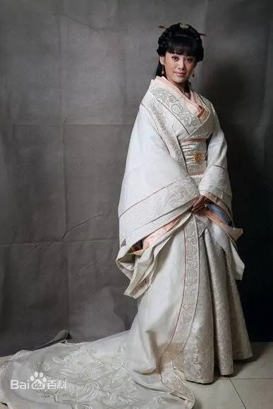
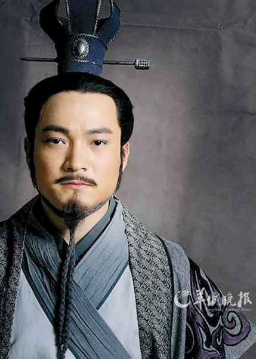

收藏
202387
点赞
202392
转发
201892
《大秦帝国之纵横》是由西安曲江大秦帝国影业投资有限公司、中国国际电视总公司、中国广播电影电视节目交易中心联合摄制；中国中央电视台、西安曲江大秦帝国影业投资有限公司、中国国际电视总公司、中国广播电影电视节目交易中心、西安曲江新区管理委员会、陕西广播电视台、福建省广播影视集团联合出品的电视剧。讲述了商鞅变法后日趋强大的秦国惠文王时期，年轻的秦国国君果断任用张仪，再一次君臣携手，纵横捭阖，一次次突破外交困局和险局，奠定了秦国强大的基础。
该剧于2012年9月27日起在中视周一至周五每晚8点播出，2013年9月5日起在央视一套每晚8点黄金档播出。
类型
古装、历史、政治
导演
丁黑
首播时间
2012年9月27日
中文名
大秦帝国之纵横
基本信息
中文名
大秦帝国之纵横
主演
宁静、富大龙、喻恩泰、姚橹、傅淼
外文名
The Qin Emprie
集数
51集(43集（央视版），51集（网络版）)
出品公司
西安曲江新区管理委员会等
每集长度
45分钟
导演
丁黑
编剧
张建伟
演员介绍
秦惠文王
演员
富大龙
运筹帷幄、多次击溃五国灭秦之兵的一代君主—秦惠文王，并携手宁静、傅淼上演一段曲折、纠缠的情感故事。

芈八子
演员
宁静
一位性格鲜明、敢爱敢恨的传奇女子。从乡野中天真烂漫的小丫头到宫廷中的铁腕女政治家，一路成长的芈八子话很糙、很猛，女人味十足。

张仪
演员
喻恩泰
辅佐秦君赢驷以邦交为主、伐战为辅的外交策略。首创连横的作战方案，以“横”破“纵”。张仪与犀首的合纵 连横之战成为该部的主旋律。